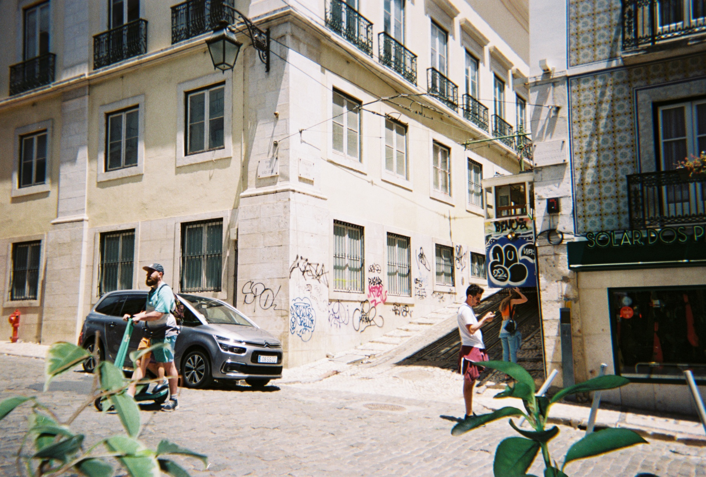
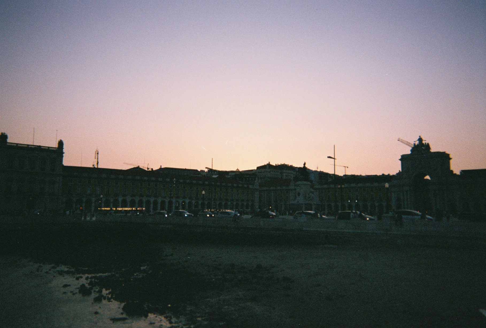
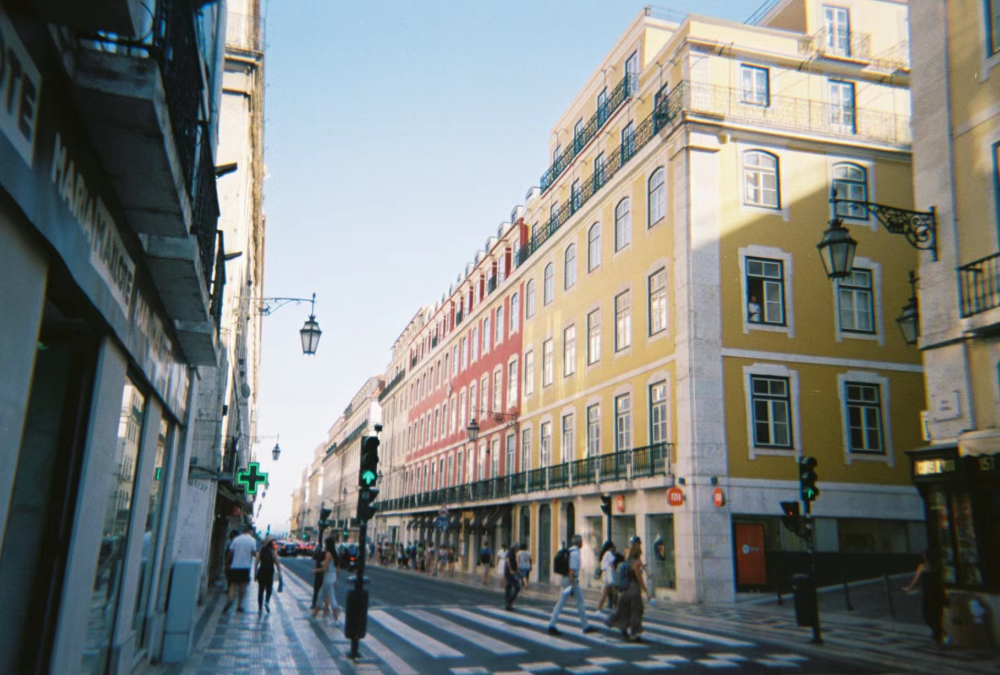
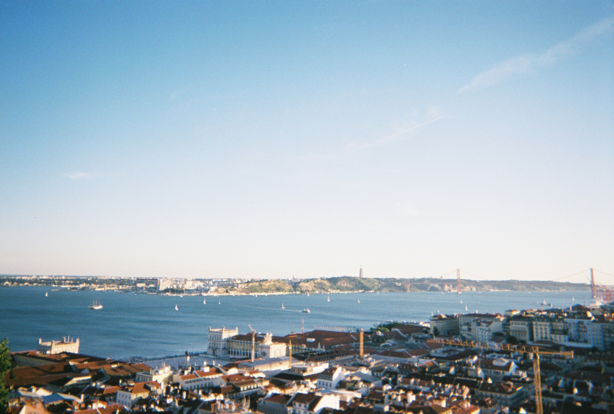
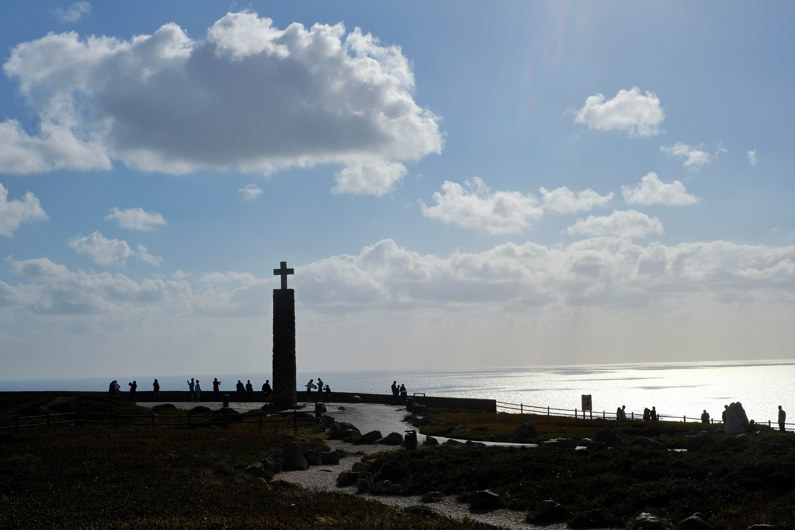
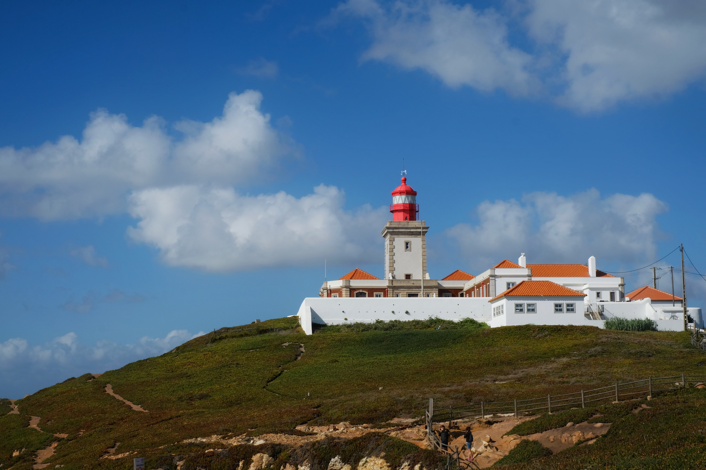
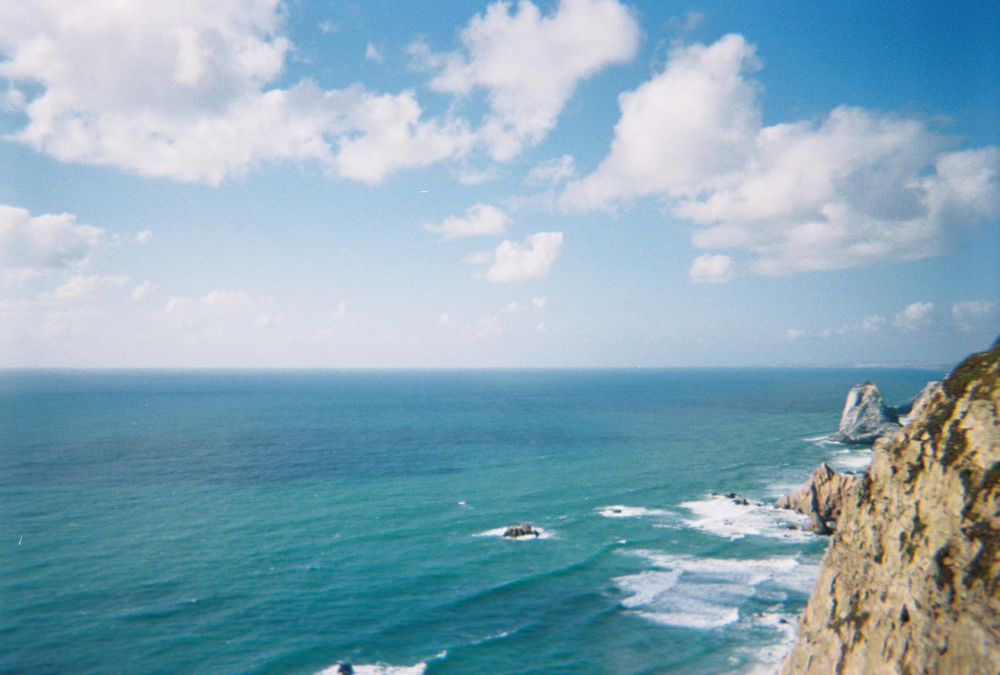

1 / 9

Trams of Lisbon
2 / 9

Commerce Square of Lisbon
3 / 9
.JPG)
View of Lisbon on Boat
4 / 9

Streets of Lisbon
5 / 9

View of Lisbon From Top of Hill
6 / 9

Cabo da Roca
7 / 9

A House in Cabo da Roca
8 / 9

Ocean of Cabo da Roca"
9 / 9
.JPG)
Quinta Da Regaleira in Sintra
Lisbon
Rating: 7.5/10
Lisbon is the capital of Portugal with many hills and cobbled streets. I stayed in Lisbon for almost a month for a project. However, because my friend and I have been in Europe for over a month, we were starting to get tired, so we did not get the chance to explore many places.
Top Attractions
- Castelo de S. Jorge
- Praça do Comércio
- Miradouro da Senhora do Monte
Top Restaurants
- Cervejaria Ramiro (Seafood)
- Solar dos Presuntos (Portuguese)
- Valdo Gatti Pizza Bio (Pizza)
Song of the City
Sintra
Rating: 8/10
Sintra is a town next to Lisbon that is famous for its European romanticism and history. The town is filled with castles, palaces, and natural beauty of the surrounding mountains and ocean. My friend and I mostly spent our time in Sintra in a resort to celebrate my birthday.
Top Attractions
- Quinta da Regaleira
- Cabo da Roca
- National Palace of Pena
Top Restaurants
- LAB by Sergi Arola (Fine Dining)
- Praça do Comércio
- Midori (Fine Dining)